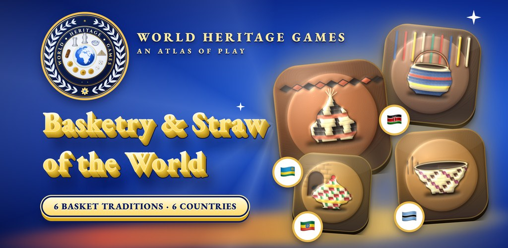
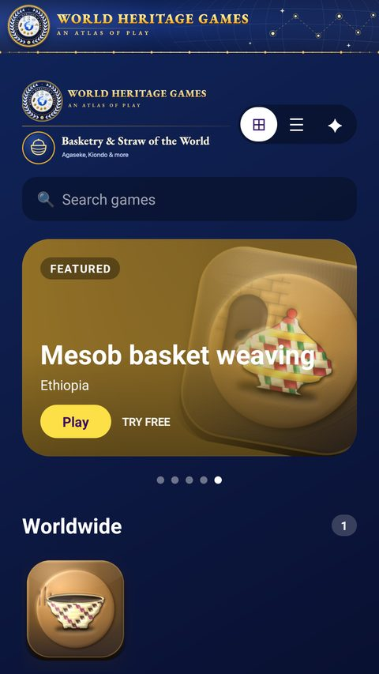
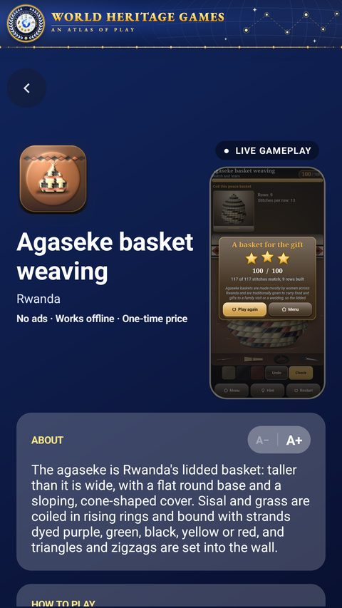
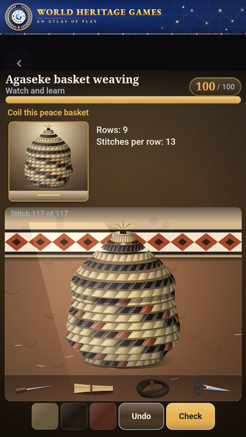
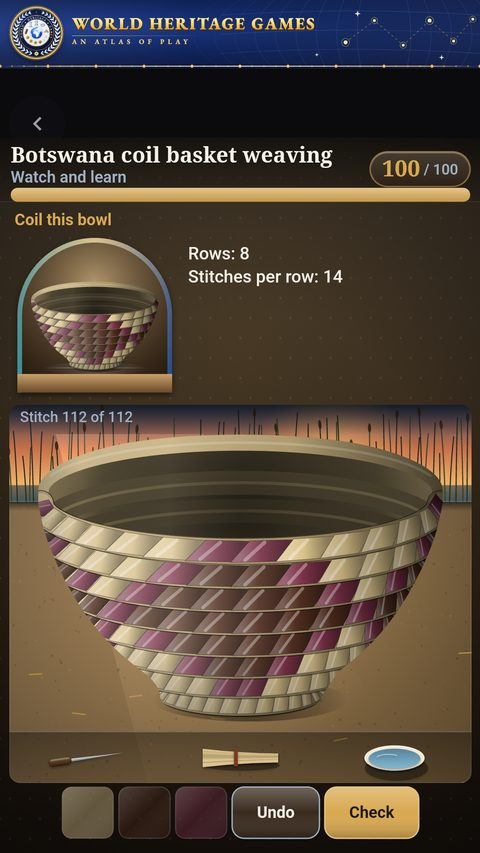
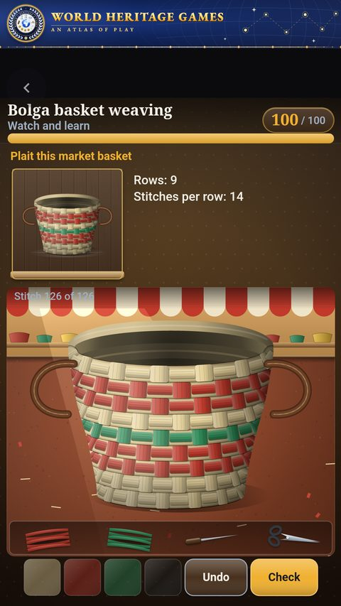

Mobile app · Android
Basketry & Straw of the World
6 basketry and straw-weaving traditions from 5 countries, each playable, each with the story of where it comes from. Coil a Botswana basket, weave an agaseke, a kiondo and more.
- 6 basketry crafts
- 5 countries
- Free 90-second preview
- Works offline
- No account
Live on Google Play.

The 6 basketry crafts
Play a preview of each in your browser: it is the same game that runs in the app.
In the app





One purchase, every game
- Try each one freeEvery game opens with a free 90-second preview.
- $2.99, onceOne optional in-app purchase unlocks all 6 for good. No subscription.
- Learn as you playWatch a demonstration, read the rules, and see where each tradition comes from.